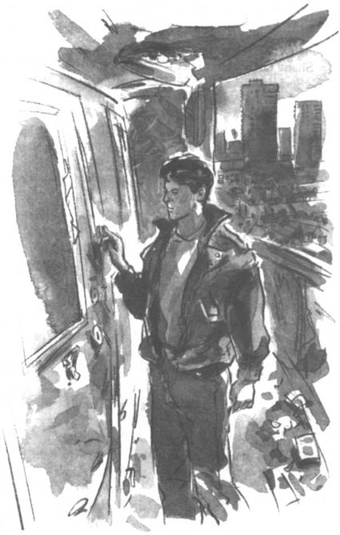

Listen to Part 1:
Ngày nào Tom cũng đến chỗ làm và ngồi ở bàn làm việc. Đầu tiên anh thấy tức giận sau đó là buồn chán. Anh còn có thể gặp lại Rita không? Mỗi lần điện thoại đổ chuông, anh đều nghĩ rằng Rita gọi tới. Mỗi lần một cô gái vào thư viện, anh đều nghĩ đó là Rita.
Một hôm, Danny bạn của Tom vào thư viện. Danny đã từng gặp Rita vài tuần trước.
‘Có chuyện gì vậy Tom?’ Danny hỏi. ‘Cậu trông tệ quá. Và Rita thế nào?’
‘Chúng tớ không còn gặp nhau nữa,’ Tom nói.
‘Nhưng chuyện đó là điên rồ!’ Danny nói. ‘Hai người rất hạnh phúc bên nhau. Có chuyện gì vậy?’
Tom kể lại cho Danny toàn bộ câu chuyện. Danny lắng nghe cẩn thận. ‘Tom, cậu quá kiêu ngạo,’ anh ta nói. ‘Cậu yêu Rita, không phải sao?’
‘Phải,’ Tom nói. ‘Rất nhiều.’
‘Vậy tại sao cậu lại bỏ rơi cô ấy? Cậu không hiểu rằng đây là giai đoạn khó khăn đối với Rita sao? Bố cô ấy muốn cô ấy lấy một người đàn ông mà cô ấy không yêu. Cô ấy muốn theo đuổi sự nghiệp mà cô ấy không thể theo đuổi.’
Tom sửng sốt. Anh chưa từng nghĩ về các vấn đề của Rita theo cách này.
‘Còn ông Spooner?’ Tom hỏi.
Listen to Part 2:
Danny nói, ‘Ông Spooner là kẻ tồi tệ. Ông ta là một kẻ nói dối và trộm cắp. Ông ta biết rằng Rita muốn có ai đó giúp đỡ cô ấy.’
‘Cậu nghĩ rằng bây giờ Rita ghét tôi không?’ Tom hỏi.
‘Tôi không nghĩ vậy,’ Danny nói.
‘Tôi phải làm gì đây?’ Tom hỏi.
‘Gọi điện và xin lỗi cô ấy. Nói với cô ấy rằng bạn yêu cô ấy. Tặng cô ấy hoa đi.’
‘Tôi sẽ suy nghĩ,’ Tom nói.
Suốt tuần sau, Tom suy nghĩ về những lời Danny nói. Nhưng Tom không muốn xin lỗi. Anh muốn Rita xin lỗi. Anh vẫn còn giận.
Rita không có điện thoại. Tom biết địa chỉ của cô ấy, nhưng anh chưa bao giờ đến nhà cô ấy. Rita không muốn bố mình biết về Tom. Ông Tatchi muốn Rita lấy Bungo.
Cuối cùng, Tom quyết định đến nhà Rita. Anh muốn nói chuyện với cô ấy. Anh vẫn yêu cô ấy rất nhiều.
Rita sống tại khu vực Silverton có tên là Scrapley. Đó là một khu vực rất nghèo. Mọi người sống trong các tòa nhà bê tông to lớn gọi là các khối tháp. Không có nơi nào để bọn trẻ chơi và rất ít người có việc làm.
Listen to Part 3:
Tom xuống xe buýt và nhìn xung quanh. Trên cao, ở một trong những khối tháp, một số thanh niên trẻ tuổi nhìn xuống anh.
‘Sao anh lại ở đây? Biến đi!’ một trong những thanh niên hét lên.
Một chai thủy tinh vỡ tan thành từng mảnh trên vỉa hè trước mặt Tom và anh thấy rất sợ. Ai ai cũng biết đến nhóm "những chàng trai tồi tệ" của Scrapley. Họ rất nguy hiểm.
Tom lấy một tờ giấy ra khỏi túi. Anh nhìn tờ giấy. Địa chỉ của Rita là Henry Cooper House. Đây chính là tòa nhà tháp kế bên. Tom đi vào tòa nhà. Nhóm trai Scrapley đi theo anh ta.
Tom vào thang máy. Rita sống ở tầng hai mươi hai. Tom bấm nút chỉ tầng hai mươi hai và cửa thang máy đóng lại. Nhóm trai Scrapley đập mạnh vào cửa thang máy. Nhưng đã quá muộn. Thang máy đang lên trên.
‘Tôi sẽ rất ghét phải sống ở đây,’ Tom tự nhủ. ‘Giờ thì tôi hiểu tại sao Rita lại muốn rời khỏi đây rồi.’
Tom lên đến tầng hai mươi hai và ra khỏi thang máy. Anh có thể nhìn thấy toàn bộ Silverton bên dưới. Tom nhìn thấy nhà mình và thư viện. Cao đẳng Silverton đã ở rất xa. Tom có thể nghe thấy tiếng hét ở phía dưới. Nhóm trai Scrapley đang ở tầng hai mươi mốt. Họ đang đuổi theo anh!
Tom vội vã tới căn hộ số bảy. Đó là nơi Rita và gia đình cô ấy sống. Tom bấm chuông cửa và chờ đợi.
Có tiếng gọi từ bên trong cánh cửa, ‘Anh cần gì?’
‘Tôi có thể nói chuyện với Rita không?’ Tom hỏi.
Listen to Part 4:
‘Rita ư?’ người đàn ông sau cánh cửa nói. ‘Rita không có ở đây.’
‘Khi nào cô ấy trở lại?’ Tom hỏi.
‘Không bao giờ,’ người đàn ông nói. ‘Con bé không sống với chúng tôi nữa. Nó đã từng là con gái tôi, nhưng bây giờ nó đã là người xa lạ rồi.’
Tom bắt đầu bỏ đi. Một cô gái đi ra khỏi căn hộ và chạy theo anh ta.
‘Anh có phải là Tom không?’ cô gái hỏi.
‘Phải,’ Tom nói.
‘Tên em là Shana. Em là em gái của Rita.’
Shana mười hai tuổi. Em ấy trông giống Rita. Tom biết rằng Rita đã kể cho Shana về anh.
‘Rita ở đâu bây giờ?’ Tom hỏi.
Shana bắt đầu khóc. ‘Em không biết. Anh đã làm chị buồn lòng, Tom. Và bố muốn chị ấy lấy Bungo. Vậy là chị ấy chuyển đi. Chị ấy không cho em biết chị đang sống ở đâu.’
Listen to Part 5:
Đột nhiên, có tiếng la hét từ phía thang máy vọng tới.

Tom vội vã tới căn hộ số bảy. Đó là nơi Rita và gia đình cô ấy sống.
‘Anh phải đi ngay bây giờ,’ Shana nói. ‘Nhóm trai Scrapley đang tới. Nhưng xin anh hãy cố gắng tìm Rita, Tom. Trước khi quá muộn!’
Shana chạy vào căn hộ của mình. Tom chạy xuống cầu thang. Nhóm trai Scrapley chạy đuổi theo Tom.
May mắn là Tom chạy rất nhanh.